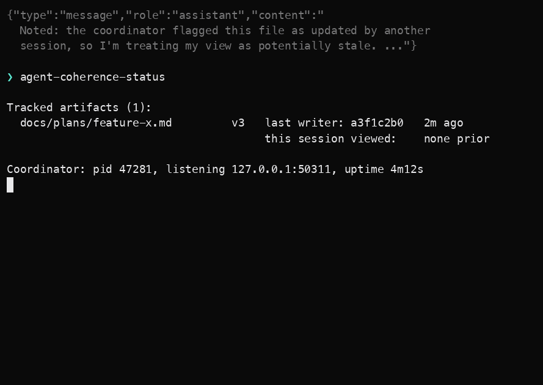

1
Two sessions, one plan.

Claude Code plugin · coordination layer
v0.1 · private alpha · Apache-2.0A Claude Code plugin that detects when one session's view of a shared artifact — CLAUDE.md, plan.md, a spec, a runbook, a DECISIONS.md — drifts from another session's, or from the version that survived compaction. The configurable rules go in permissions.deny. The prose residue that can't go to policy lives here, version-tracked across sessions and worktrees.
❯ claude plugin marketplace add hipvlady/agent-coherence-plugin
Four scenes from a real claude run, captured as static screenshots. The warning text in scene 3 is the output of the plugin's PreToolUse:Read hook — verbatim from ccs.adapters.claude_code.hook_payloads.stale_read_warning() in the library, the actual code path that fires when the coordinator detects a stale view.
1
2

3
![Terminal screenshot of the PreToolUse Read hook event firing with decision allow. The additionalContext field contains a multi-line stale-read warning marked with a warning emoji: it states the file was updated by session a3f1c2b0, that the current version is v3, that this is the first time the session has observed this artifact because another session in the workspace registered it first, that the worktree content matches the last-recorded hash so the divergence is purely about version-tracking metadata, and recommends re-reading the file before acting on stale assumptions.](stale-read-scene-3.png)
4

All four screenshots come from outreach/plugin-demo/montage.sh in this repo — same pipeline that produced the demo described in docs/demos/2026-05-17-stale-read-demo-script.md in the plugin. The warning text is byte-for-byte the library's actual output; the surrounding stream-JSON is the format claude emits under --output-format stream-json --include-hook-events.
The shape of the problem comes from a real Claude Code thread: rules-as-prose are subject to context economics — any system where the rule is more fragile than the policy is going to leak. Split CLAUDE.md content into two classes and treat each correctly:
| Class | Substrate | Failure mode | Right fix |
|---|---|---|---|
| Tool-class restrictions | settings.json permissions.deny — durable config |
Subagent doesn't inherit prose rule → runs unrestricted tool | Migrate out of prose. permissions.deny survives subagent boundaries and compaction. |
| Descriptive / architectural | CLAUDE.md, plan.md, spec.md, runbook.md, DECISIONS.md — prose |
Can't be config-ified by definition. Degrades silently via compaction; propagates inconsistently to subagents; drifts across sessions in different worktrees. | Versioning + coherence tracking. This is where the plugin sits. |
The two fixes don't compete. Moving the tool-class rules out of CLAUDE.md into permissions.deny is hygiene that reduces the surface the plugin has to track. The prose residue — design constraints, architectural decisions, active-work artifacts — is what's left for coherence tracking.
Six issues on the public Claude Code tracker, over three months, across two surfaces, share one underlying shape: the runtime emits coordination signals that don't reflect actual state. A capability or piece of state appears honored; the runtime can't honor it; the LLM completes the call as text rather than the system surfacing a hard failure.
agent-coherence is the artifact-layer instance of this cross-cutting invariant: signals about shared state must reflect actual state. The plugin enforces "your session has seen artifact version V; the coordinator's current version is V+N from session B" — the same shape as "buffer the notification until the result actually lands" or "don't claim the rule is present when it isn't in context."
The runtime fixes for the other two layers are upstream — they're work Anthropic owns. The plugin doesn't compete with them. It sits at the layer those fixes don't reach: concurrent multi-session state coherence across worktrees and across mid-session artifact edits.
CLAUDE.md.The same fragility applies to skill instructions and slash-command prompts loaded at session start. Anything important loaded at the session boundary — which is to say, anything loaded at a boundary that compaction crosses — has the same shape. CLAUDE.md is the visible case; every plugin that loads instructions at session start (slash commands, skill prompts, project rules) inherits it.
If your team relies on prose-shaped context surviving across sessions, the artifact category extends well beyond plan files.
One-line marketplace install. The plugin wires PreToolUse:Read and PreToolUse:Edit|Write hooks into Claude Code's hook system; a small coordinator process runs in the background per workspace, tracking artifact versions across sessions. SQLite-backed for crash recovery and post-compaction rehydration; permissions.deny-aware so it doesn't double-warn on tools the config already blocks.
❯ claude plugin marketplace add hipvlady/agent-coherence-plugin ❯ claude plugin install agent-coherence ❯ agent-coherence-track docs/plans/feature-x.md ❯ agent-coherence-status # next claude session that reads a tracked file sees the warning # above when another session has touched it
Install measured at 27 seconds end-to-end (claude v2.1.131) on the alpha install, with the agent-coherence library on PyPI as the gating dependency.
15-minute call. Walk me through your CLAUDE.md + subagent setup; I'll tell you whether the plugin holds up under your specific compaction + worktree patterns. Private alpha for ~10 hand-picked installers; v0.1.1 marketplace listing on a 4-week timeline.